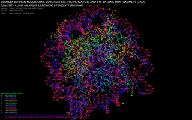
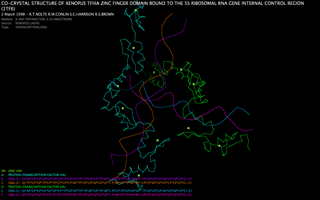

Download
Structure requires Mac OS X 10.6 Snow Leopard. A screen resolution of at least 1024x768 is recommended. Large PDBs may load slowly on older machines.
Download version 2.3 (9.6 MB): screensaver module and fifty well-known PDBs.
Overview
Structure is a protein / macromolecule visualization tool that runs as a screensaver module. It colorfully renders PDB (Protein Data Bank) files using unique algorithms. The module automatically annotates, colors, and rotates structures for an educational and captivating display. Show off your research or simply enjoy this entrancing introduction to structural biology!
Features
Endless variety - automatically downloads new structures from the Protein Data Bank archive.
Have a favorite protein? Structure can load files from a folder of your choice.
Clear and informative rendering - three rendering styles including transparent wireframes effectively differentiate and highlight ligands and heterogens.
Text overlay provides additional details about each structure.
Fast OpenGL rendering means low processor usage.
Sample screenshots
|  |  |
License
Structure is free software. Please let me know how you are using my program!
About the author
Structure was created by Benjamin Blonder in 2005. The program was completely rewritten in 2009. You can learn more about me at my website. Please email me with questions and feedback.